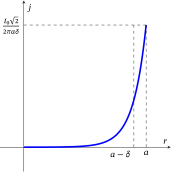

Класична електродинаміка. Збірник задач
Відповіді
Електро- та магнітостатика у вакуумі
а) \(\rho = q\delta (\vect {r})\);
б) \(\rho = \frac {q}{2\pi R^2}\delta (r - R)\delta (\cos \theta )\);
в) \(\rho = \frac {\lambda (\phi )}{R}\delta (r - R)\delta (\cos \theta )\);
г) \(\rho = \frac {q}{4\pi R^2}\delta (r - R)\); д) \(\rho = \sigma (\theta )\delta (r - R)\).
2.10. Тілесний кут, під яким видно поверхню \(S\) з точки \(r\):
\[ \Omega (\vect {r}) = \int \limits _S d\vect {S}'\frac {\vect {r}' - \vect {r}}{|\vect {r}' - \vect {r}|^3}. \]
Обчислимо зміну тілесного кута при зсуві точки спостереження на малий вектор \(\delta \vect {r}\) (\(\vect {r} \to \vect {r} + \delta \vect {r}\), контур залишається нерухомим). Це можна зробити, залишаючи, навпаки, точку \(\vect {r}\) нерухомою, але зсуваючи поверхню \(S\) на \(-\delta \vect {r}\), тобто у протилежному напрямку. При цьому зміна \(\Omega \) відбувається за рахунок тонкої смужки, яка відповідає переміщенню контура \(L\) , який є границею \(S\) (\(\delta d{\vect {S}} = - \delta \vect {r} \times d{\vect {l}'}\)):
\[ \delta \Omega (\vect {r}) = \delta \vect {r}\times \vect {\nabla }\Omega = -\oint \delta \vect {r}\times d\vect {l}' \cdot \frac {\vect {r}' - \vect {r}}{|\vect {r}' - \vect {r}|^3} = - \oint d\vect {l}' \times \cdot \frac {\vect {r}' - \vect {r}}{|\vect {r}' - \vect {r}|^3} \delta \vect {r}. \]
Звідси виходячи з властивості тілесного кута, під яким видно замкнений контур \(L\):
\[ \vect {\nabla }\Omega = - \oint d\vect {l}' \times \cdot \frac {\vect {r}' - \vect {r}}{|\vect {r}' - \vect {r}|^3} = \oint d\vect {l}' \times \frac {\vect {r} - \vect {r}'}{|\vect {r} - \vect {r}'|^3}. \]
З іншого боку, індукція в точці \(\vect {r}\), створювана струмом в контурі \(L\), є
\[ \Bfield = \frac {I}{c} \oint d\vect {l}' \times \frac {\vect {r} - \vect {r}'}{|\vect {r} - \vect {r}'|^3} = \frac {I}{c} \vect {\nabla }\Omega . \]
2.14. \(\vect {B}(r) = \frac {4\pi }{cr^2}\left [ \vect {e}_0 \times \vect {r} \right ]\int \limits _0^r j(r)r dr\).
2.24. Розв’яжемо задачу за допомогою рівняння Лапласа в декартовій системі координат та граничних умов на площині \(z = 0\). Умова (1.15) виконується за неперервності потенціалу
\(\seteqnumber{0}{8.}{11}\)\begin{equation*} \label {continuity} \left .\pot (x,y,z)\right |_{z \to 0^+} = \left .\pot (x,y,z)\right |_{z \to 0^-}, \end{equation*}
а умова (1.14) дає
\(\seteqnumber{0}{8.}{11}\)\begin{equation*} \label {boundary} -\left . \frac {\partial \pot (x,y,z)}{dz}\right |_{z \to 0^+} + \left . \frac {\partial \pot (x,y,z)}{dz}\right |_{z \to 0^-} =4\pi \sigma (x,y). \end{equation*}
Обмежимось випадком а).
Оскільки поверхнева густина заряду в граничних умовах має вигляд добутку \(\sigma (x, y) = \sigma _0 \sin \left ( \frac {x}{L}\right ) \cos \left ( \frac {2y}{L}\right ) \) функцій від \(x\) та \(y\), можна застосувати метод розділення змінних, покладаючи:
\[ \pot (x,y,z) = X(x)Y(y)Z(z). \]
Більше того, тут має сенс «вгадати» \(X(x) = \sin \left (\frac {x}{L}\right ) \), \(Y(y) = \cos \left (\frac {2y}{L}\right ) \), щоб відповідні функції можна було скомпенсувати в граничних умовах. Розв’язок має бути вибрано так, щоб виконувалося рівняння Лапласа та граничні умови (1.15), (1.14).Підстановка в рівняння Лапласа дає рівняння на \(Z(z)\):
\(\seteqnumber{0}{8.}{11}\)\begin{equation*} \frac {d^2Z}{dz^2} - \left ( \frac {5}{L^2}\right ) Z = 0. \end{equation*}
Площина \(z = 0\) у середньому є електронейтральною, відповідно, далеко від неї потенціал має прямувати до нуля. Відповідно до цього, при \(z >0\) відкидаємо експоненційно зростаючий розв’язок останнього рівняння, залишаючи \(Z(z) = C_1 e^{-\frac {\sqrt 5}{L}z} \). Аналогічно при \(z < 0\) маємо \(Z(z) = C_2 e^{\frac {\sqrt 5}{L}z} \). З умови неперервності потенціалу при \(Z = 0\), дістаємо \(C_1 = C_2\) . Тепер потенціал визначено з точністю до сталого множника
\(\seteqnumber{0}{8.}{11}\)\begin{equation*} \pot (x,y,z) = C \sin \left ( \frac {x}{L} \right ) \cos \left ( \frac {2y}{L} \right ) \cdot e^{-\gamma |z|}. \end{equation*}
З граничної умови (1.14) визначаємо \(C\).
Відповідь а):
\(\seteqnumber{0}{8.}{11}\)\begin{equation*} \pot = \frac {2\pi \sigma _0 L}{\sqrt {5}}e^{-\frac {\sqrt {5}}{L}|z|}\sin \left ( \frac {x}{L}\right ) \cos \left ( \frac {2y}{L}\right ) . \end{equation*}
2.25. \(\pot = \frac {{2{\sigma _0}ab}}{{\sqrt {{a^2} + {b^2}} }}{e^{ - \alpha |z|}}\sin \left ( {\frac {{\pi x}}{a}} \right )\sin \left ( {\frac {{\pi y}}{b}} \right )\), де \(\alpha = \frac {\pi }{{ab}}\sqrt {{a^2} + {b^2}}\).
Зауважимо, що, енергію системи зручно за обчислювати за допомогою формули (2.8) \(W_e = \frac {{\sigma _0^2{a^2}{b^2}}}{{\sqrt {{a^2} + {b^2}} }}\).
2.27. \(\pot (r) = \begin {cases} 4\pi a\ln \frac {R_2}{R_1}, & r \le R_1 \\ 4\pi a \left [ \left ( 1- \frac {R_1}{r}\right ) + \ln \frac {R_2}{r} \right ] , & R_1 \le r \le R_2 \\ 4\pi a \frac {R_2 - R_1}{r}, & r \ge R_2 \end {cases} \)
2.28. Розпишемо потенціал як:
\[ \pot = \frac {q}{r}e^{-\frac {r}{a}} = \frac {q}{r} + \frac {q}{r}\left (e^{-\frac {r}{a}} - 1\right ) . \]
Подіємо оператором Лапласа на цей потенціал. Перший доданок відповідає полю точкового заряду з \(\delta \)-видним розподілом густини. Другий доданок обчислюємо в сферичних координатах:
\[ \Delta \left [\frac {q}{r}\left (e^{-\frac {r}{a}} - 1\right ) \right ] = \frac {q}{r^2}\frac {\partial }{\partial r}\left [ r^2\left ( \frac {\partial }{\partial r}\frac {e^{-r/a} - 1}{r} \right ) \right ] = \frac {qe^{-r/a}}{a^2r}. \]
Співставляючи з рівнянням Пуассона, знайдемо розподіл заряду:
\[ \rho = q\delta (\vect {r}) - \frac {q}{4\pi a^2} \frac {e^{-\frac {r}{a}}}{r}, \]
звідки видно, що екранований кулонівський потенціал створюється точковим зарядом, навколо якого розподілена «хмара» електричного заряду. Такий характер розподілу зустрічається, наприклад, в електролітах, або плазмі.
2.29. Оскільки ми маємо азимутальну симетрію в розподілі заряду, будемо шукати потенціал у вигляді:
\(\seteqnumber{0}{8.}{11}\)\begin{equation} \pot (r, \theta ) = \begin{cases} \sum \limits _{l=0}^{\infty }A_l \left ( \frac {r}{R}\right )^l P_l(\cos \theta ), \quad r<R \\[1.5em] \sum \limits _{l=0}^{\infty }B_l \left ( \frac {R}{l}\right )^{l+1} P_l(\cos \theta ), \quad r \ge R. \end {cases} \end{equation}
Випадок (а)
З урахуванням граничних умов на сфері:
\(\seteqnumber{0}{8.}{12}\)\begin{equation} \pot = \begin{cases} \pot _0\frac {r}{R} \cos \theta , \quad r<R \\ \pot _0\left ( \frac {R}{r}\right )^2 \cos \theta , \quad r \ge R. \end {cases} \end{equation}
Поверхневу густину заряду на поверхні знайдемо з граничної умови:
\(\seteqnumber{0}{8.}{13}\)\begin{equation} \sigma = \frac {1}{4\pi } \left ( \left . \frac {\partial \pot _{\mathrm {in}}}{\partial r}\right |_{r \to R} - \left . \frac {\partial \pot _{\mathrm {out}}}{\partial r}\right |_{r \to R} \right ) = \frac {3\pot _0}{4\pi R} \cos \theta . \end{equation}
-
а)
\(\seteqnumber{0}{8.}{14}\)\begin{equation} \pot = \begin{cases} \frac 43\pi \sigma _0r \cos \theta , \quad r<R \\[1em] \frac {\frac 43\pi \sigma _0R^3}{r^2} \cos \theta , \quad r \ge R. \end {cases} \end{equation}
-
б)
\(\seteqnumber{0}{8.}{15}\)\begin{equation} \pot = \begin{cases} \frac 43\pi \sigma _0r \cos \theta + 4\pi \sigma _1 R, \quad r<R \\[1em] \frac {\frac 43\pi \sigma _0R^3}{r^2} \cos \theta + \frac {4\pi \sigma _1 R^2}{r}, \quad r \ge R. \end {cases} \end{equation}
2.32. \(\pot _\text {ind}(\vect {r}) = - \frac {Q}{r}\sum \limits _{n = 1}^N \sum \limits _{m = - n}^n {C_{nm}{\left ( \frac {R}{r} \right )^n}} Y_{nm}(\theta ,\varphi )\)
2.36. \(\pot (r) = \begin {cases} \frac {{2\pi }}{{2n + 3}}{\rho _0}{R^2}\left [ {\frac {{2n + 3}}{{2n + 1}}{{\left ( {\frac {r}{R}} \right )}^n} - {{\left ( {\frac {r}{R}} \right )}^{n + 2}}} \right ]{P_n}(\cos (\theta )) , \quad r<R \\ \frac {{4\pi {\rho _0}{R^2}}}{{(2n + 3)(2n + 1)}}{\left ( {\frac {R}{r}} \right )^{n + 1}}{P_n}(\cos (\theta )) , \quad r>R \end {cases}\)
2.40. \(\pot (r, \phi , z) = \begin {cases} \frac {\pi }{2}{\sigma _0}R\left ( {3\sin (\varphi )\frac {r}{R} - \frac {1}{3}\sin (3\varphi ){{\left ( {\frac {r}{R}} \right )}^3}} \right ), \quad r < R , \\ \frac {\pi }{2}{\sigma _0}R\left ( {3\sin (\varphi )\frac {R}{r} - \frac {1}{3}\sin (3\varphi ){{\left ( {\frac {R}{r}} \right )}^3}} \right ) , \quad r > R . \end {cases} \)
2.46. Спосіб 1 (використання закону Біо-Савара-Лапласа).
\[ \Bfield (\vect {r}) = \frac 1c \int dV' \vect {j} \times \frac {(\vect {r} - \vect {r}')}{|\vect {r} - \vect {r}'|^3} \]
Підставимо вираз густини струму з умови задачі, і будемо шукати поле в точці \(\vect {r} = 0\):
\(\seteqnumber{0}{8.}{16}\)\begin{multline} \label {B(0)_prb:BSL} \Bfield (0) = -\frac 1c \int dV' \left ( c\vect {\nabla }\times \left ( \rho (r) \vect {a}\right ) \right ) \times \frac {\vect {r}'}{|\vect {r}'|^3} = \\ = -\int \left [ \vect {\nabla }\rho (r)\times \vect {a} \right ] \times \frac {\vect {r}'}{|\vect {r}'|^3} dV' = \\ = -\int \limits _0^{\infty } dr'\frac {d\rho }{dr'} \int d\Omega ' [{\vect {n}}' \times [{\vect {a}} \times {\vect {n}}']], \end{multline} де \(\vect {n}' = \frac {\vect {r}'}{r'}\). Спрямуємо вісь \(z\) вздовж вектора \(\vect {a} = a\vect {e}_z\). Використовуючи «BAC - CAB»
\[ \int {d\Omega '} [{\vect {n}}' \times [{\vect {a}} \times {\vect {n}}']] = \int {d\Omega '} [\vect {a} - \vect {n}'(\vect {a} \cdot {\vect {n}}')], \]
можна бачити (з міркувань симетрії), що інтеграл \(\int {d\Omega '} [{\vect {n}}' \times [{\vect {a}} \times {\vect {n}}']] \) має напрямок вздовж \(z\), тому, його легко обчислити:
\(\seteqnumber{0}{8.}{17}\)\begin{multline} \int d\Omega ' [{\vect {n}}' \times [{\vect {a}} \times {\vect {n}}']] = {\vect {a}}\int {d\Omega '} \left ( {[{\vect {n}}' \times [{{\vect {e}}_z} \times {\vect {n}}']] \cdot {{\vect {e}}_z}} \right ) = \\ = \vect {a}\int \limits _0^\pi {d\theta } \sin \theta \int \limits _0^{2\pi } {d\varphi } \left [ {1 - {\cos ^2}\theta } \right ] = \vect {a}\frac {8\pi }{3}. \end{multline} Інтеграл \(\int \limits _0^{\infty } dr'\frac {d\rho }{dr'} = -\rho (0)\). Підставляючи все в (8.17), маємо:
\[ \Bfield (0) = \vect {a}\frac {8\pi }{3}\rho (0). \]
Спосіб 2 (використання рівняння Максвелла).
Використаємо безпосередньо рівняння Максвелла:
\[ \vect {\nabla }\times \Bfield = \frac {4\pi }{c}\vect {j} \]
і підставимо вираз густини струму з умови задачі:
\[ \vect {\nabla }\times \Bfield = 4\pi \vect {\nabla }\times \left ( \rho (r) \vect {a}\right ). \]
Якщо ротори лівої і правої частин рівняння однакові, то вони можуть відрізнятись на градієнт довільної скалярної функції \(\psi \), отже
\(\seteqnumber{0}{8.}{18}\)\begin{equation} \label {B(0)_prb:ME} \Bfield (r) = 4\pi \left ( \rho (r) \vect {a}\right ) + \vect {\nabla }\psi . \end{equation}
Причому, оскільки \(\rho (r)\) і \(\Bfield (r)\) спадають до нуля на нескінченності, то \(\psi \) також спадає до нуля на нескінченності.
З іншого рівняння Максвела \(\vect {\nabla } \cdot \Bfield = 0\) маємо,
\[ 4\pi \vect {\nabla } \cdot \left ( {\rho (r){\vect {a}}} \right ) + \Delta \psi = 0, \]
звідки отримуємо рівняння Пуассона для \(\psi \):
\[ \Delta \psi = - 4\pi \vect {\nabla } \cdot \left ( {\rho (r){\vect {a}}} \right ) = - 4\pi \frac {d\rho }{dr} \left ( \vect {n} \cdot \vect {a} \right ). \]
Оскільки \(\psi \) спадає на нескінченності, то рівняння має єдиний розв’язок:
\[ \psi (\vect {r}) = \int dV' \frac {d\rho }{dr'}\frac {(\vect {n}'\cdot \vect {a})}{|\vect {r} - \vect {r}'|}. \]
Тепер знайдемо градієнт \(\psi \):
\[ \vect {\nabla }\psi = - \int {dV'} \frac {d\rho }{dr'}\frac {(\vect {n}' \cdot \vect {a})}{|\vect {r} - \vect {r}'|^3}\left ( {\vect {r} - \vect {r}'} \right ), \]
і в нулі
\[ \nabla \psi (0) = \int dV' \frac {d\rho }{dr'}\frac {(\vect {n}' \cdot \vect {a})}{|\vect {r}'|^3} \vect {r}'= \int {d\Omega } \int \limits _0^\infty dr \frac {d\rho }{dr}\frac {(\vect {n} \cdot \vect {a})}{r^2}{\vect {n}}. \]
Далі аналогічно до попереднього способу проводимо обчислення інтегралів, а тому матимемо:
\[ \nabla \psi (0) = -\frac {4\pi }{3}\vect {a}\rho (o). \]
Підставимо тепер цей вираз в формулу (8.19), остаточно отримуємо
\[ \Bfield (0) = \vect {a}\frac {8\pi }{3}\rho (0), \]
що збігається з відповіддю, отриманою в попередньому способі.
2.51. Проведемо вісь \(OZ\) вздовж поля \(\Bfield = (0, 0, B)\).
а) \(A_x = -\frac 12 By\), \(A_y = \frac 12 Bx\), \(A_z = 0\);
б) \(A_{\phi } = \frac 12 Br\), \(A_r = A_z = 0\); в) \(A_{\phi } = \frac 12 Br\sin \theta \), \(A_r = A_{\theta } = 0\), або у векторній формі \(\vect {A} = \frac 12 \left [ \Bfield \times \vect {r} \right ] \). З огляду калібрувальної інваріантності вектор-потенціал не визначений однозначно. Тут наведені найбільш зручні представлення вектор-потенціалу однорідного поля в різних системах координат.
2.52. Потенціал кулі є квадрупольним, \(\pot (z) = \frac {\pi ^2\rho _0 R^5}{48z^3}\).
2.55. \(\Bfield = \begin {cases} \frac {2q}{3c}\frac 1R\vect {\omega }, \quad r < R \\ \frac {3(\vect {p}_m \cdot \vect {r})\vect {r}}{r^5} - \frac {\vect {p}_m}{r^3}, \quad r > R \end {cases} \) де \(\vect {p}_m = \frac {qR^2}{3c}\vect {\omega }\) — магнітний момент сфери.
2.56. \(B_z = \frac {324\pi a}{5c}j_0\).
2.58. \(W = \sum \limits _{l=0}^{\infty }\sum \limits _{m=-l}^{l}a_{lm}Q_{lm}^*\).
\begin{multline*} W = -(\vect {p}_1\cdot \Efield _2) = -\frac {3(\vect {p}_1\cdot \vect {r})(\vect {p}_2\cdot \vect {r})}{r^5} + \frac {(\vect {p}_1\cdot \vect {p}_2)}{r^3} =\\ = -\frac {p_1p_2}{d^3}\left [ 3\cos \theta _1\cos \theta _2 - \cos (\theta _1 - \theta _2)\right ] , \end{multline*}
2.60. \(F = \frac {6R^6}{l^4} E_0^2\).
Випромінювання та поширення електромагнітних хвиль
3.1. \(1/4\) ( реалізується знак рівності у співвідношенні невизначеностей)
3.7. \(P = 1\).
3.8. \(P = \frac {\sqrt {5}}3\).
3.9. \(P = 0\).
3.14. При \(\vect {v} = \const \) вираз
\[ \vect {R}_q - \frac {\vect {v}}{c} R_q = \vect {R}_q -\vect {v}(t - t_q) = \vect {R}_t, \]
тобто є вектором проведеним від заряду до точки спостереження в момент самого спостереження. Знаменник потенціалів Ліенара-Віхерта можна записати як:
\[ R_q - \frac {\vect {v}}{c} R_q = R_t\sqrt {1-\frac {v^2}{c^2}\sin ^2\theta }. \]
3.17. Дипольний момент системи
\[ \vect {p} = \frac {q_i}{m_i} \sum \limits _{i = 1}^n m_i \vect {r}_i = \frac {q_i}{m_i} M\vect {R}_\mathrm {CM}, \]
де \(\vect {R}_\mathrm {CM}\) — радіус-вектор центра мас системи. Нехтуючи втратами імпульсу на випромінювання, у першому наближенні за відсутності зовнішніх полів \(\ddot {\vect {R}}_\mathrm {CM} = 0\), отже інтенсивність випромінювання дорівнює нулю.
3.19. Поля \(\Efield (t) = \frac {q\vect {n}\times [ \vect {n} \times \dot {\vect {v}}] }{c^2r}\), \(\Bfield (t) = \frac {q\dot {\vect {v}}\times \vect {n}}{c^2r}\), розподіл випромінювання \(\frac {dN}{do} = \frac {q^2}{4\pi c^3}[\dot {\vect {v}}\times \vect {n}]^2\), повна потужність \(N = \frac {2q^2}{3c^3}\dot {\vect {v}}^2\). Прискорення \(\dot {\vect {v}} \) є функцією \(t - \frac {r}{c}\).
3.20. \(I = \frac {2p^2\omega ^4}{3c^3}\).
3.21. \(\vect {S} = \frac {p_0^2ck^4}{2\pi r^2}\sin ^2\theta \sin ^2\left (\frac \pi 2\cos \phi \sin \theta \right )\ \vect {n}\), де \(k=\nfrac {2\pi }{\lambda }\), \(r,\theta ,\phi \) — сферичні координати, \(\vect {n} = \nfrac {\vect {r}}{r}\).
3.22. Згідно (3.6) і з урахуванням \(\vect {p} = q_1\vect {r}_1 + q_2\vect {r}_2 = \mu \left ( \frac {q_1}{m_1} - \frac {q_2}{m_2}\right )\vect {r} \), де \(\mu \) — приведена маса, а \(\vect {r} = \vect {r}_2 - \vect {r}_1\), маємо:
\[ N(t) = \frac {2\mu ^2}{3c^3}\left ( \frac {q_1}{m_1} - \frac {q_2}{m_2}\right )^2\ddot {\vect {r}}^2(t). \]
Згідно рівнянню руху зарядів \(\mu \ddot {\vect {r}} = {q_1q_2}\frac {\vect {r}}{r^3}\), отримуємо
\[ N(t) = \frac {2q_1^2q_2^2}{3c^3} \left ( \frac {q_1}{m_1} - \frac {q_2}{m_2}\right )^2 \frac {1}{r^4}. \]
3.25. \(\mathcal {E} = \frac {I_0^2a^4b}{c^5}\sqrt {2\pi b}\).
3.26. \(\left \langle {dN/do} \right \rangle = \frac {I_0^2}{2\pi c}\frac {\left [\sin (m\pi \sin ^2\theta /2) \right ]^2}{(\sin \theta )^2}\)
3.27. \(I = \frac {q^2R^4\omega ^6}{10c^5} \).
3.28. \(W = \frac {2qEv_0d}{3mc^3}\left ( \sqrt {\frac {2qEd}{mv_0^2}+\cos ^2\alpha } - \cos \alpha \right ) \).
3.29. \(I = \frac {2e^2}{3c^3} \left ( \frac {Ze^2}{mR^2}\right )^2 \), \(t = \frac {m^2c^3R^3}{4Ze^4}\).
3.30. При дії хвилі \(\vect {E} = \vect {E}_0e^{-i\omega t}\), де \(\vect {E}_0 = \const \), що падає, частинка рухається згідно рівняння
\[ m \left ( \ddot {\vect {r}} + 2\gamma \dot {\vect {r}} + \omega _0^2\vect {r}\right ) = e\Efield e^{-i\omega t}. \]
Шукаємо розв’язок у вигляді \(\vect {r} = \vect {r}_0e^{-i\omega t}\). Дипольний момент \(\vect {p} = e\vect {r}_0e^{-i\omega t}\) .
Отже,
\[ \vect {p} = \frac {e^2\vect {E}_0\exp {- i\omega t}}{m\left [ {\omega _0^2 - \omega ^2 - 2i\gamma \omega } \right ]}. \]
У хвильовій зоні \(\vect {B} = \frac {\ddot {\vect {p}} \times \vect {n}}{rc^2} = - \omega ^2 \frac {\vect {p} \times \vect {n}}{rc^2}\). Густина потоку енергії розсіяного випромінювання (середнє за часом) \(\Pi = \frac {c}{8\pi }{\omega ^4}\frac {{\left | {\left [ {{\vect {p}} \times {\vect {n}}} \right ]} \right |}^2}{{{r^2}{c^4}}}\).
Отже, диференціальний переріз розсіювання:
\[\frac {{d\sigma }}{{do}} = r_e^2\frac {{{\omega ^4}{{(\sin \theta )}^2}}}{{{{({\omega ^2} - \omega _0^2)}^2} + 4{\gamma ^2}{\omega ^2}}}, \]
де \(r_e = \frac {e^2}{mc^2}\) — класичний заряд електрона, \(\theta = (\widehat {\vect {n},\Efield _0})\).
Повний переріз розсіювання:
\[ \sigma = \frac {{8\pi }}{3}r_e^2\frac {{{\omega ^4}}}{{{{({\omega ^2} - \omega _0^2)}^2} + 4{\gamma ^2}{\omega ^2}}} \]
Спеціальна теорія відносності
а) Не існує, оскільки \(A'_{\mu }\) часоподібний. б) \(A_{\mu } = \left \lbrace -\frac {Va}{\sqrt {1-V^2}},\frac {a}{\sqrt {1-V^2}},0,0 \right \rbrace \).
а) \(A_{\mu } = \left \lbrace \frac {a}{\sqrt {1-V^2}},-\frac {aV}{\sqrt {1-V^2}},0,0 \right \rbrace \). б) Не існує, оскільки \(A'_{\mu }\) простороподібний.
4.3. \(V_C = \frac {p_1 + p_2}{\sqrt {p_1^2 + m_1^2} + \sqrt {p_2^2 + m_2^2}}\).
4.7. \(\frac {N_\rightarrow }{N_\leftarrow } = \frac {1+ \beta }{1-\beta }\), де \(\beta = \frac {v}{c}\).
4.9. \(\Efield ' = a(-1,1,0)\), \(\Bfield ' = a(1,2,1)\), \(\Efield '' = a(-1,\Gamma (1- v),2\Gamma v)\), \(\Bfield '' = a(1,2\Gamma ,\Gamma (1- v))\), де \(\Gamma = \frac {1}{\sqrt {1 - v^2}}\).
4.18. \(\vect {v} = c \frac {\left [ \Efield \times \Bfield \right ] }{B^2}\), при \(E<B\).
4.19. \(\tg \frac {\theta }{2} = \frac qm \frac {Q}{bv_0^2}\).
а) провідна заземлена сфера: \(\frac {d\sigma }{d\Omega } \approx \frac {\pi Re^2}{4mυ_0^2} \cdot \frac {1}{\theta ^3}\), б) провідна ізольована сфера: \(\frac {d\sigma }{d\Omega } \approx \frac {\pi R^2}{8} \cdot \sqrt {\frac {3e^2}{R\pi mυ_0^2}}\cdot \theta ^{-5/2}\).
4.21. \(x(t) = \frac {E_0}{B_0}c\left ( t - \frac {1}{\Omega }\sin \Omega t \right ) \), \(y(t) = \frac {E_0}{B_0} \frac {c}{\Omega }\left ( 1 - \cos \Omega t \right ) \), де \(\Omega = \frac {qB_0}{mc}\) — циклотронна частота.
4.23. \(x(t) = \frac {qE_0}{2m\Omega ^2}\left ( \sin \Omega t - \Omega t\cos \Omega t \right ) \), \(y(t) = \frac {qE_0}{2m\Omega }t\sin \Omega t\).
Діелектрики та магнетики в статичних полях
6.5. \(\Efield _2 = \Efield _1 + \left ( \frac {\epsilon _1}{\epsilon _2} - 1 \right )\vect {n}\left ( \vect {n} \cdot \Efield _1 \right ) - \frac {4\pi \sigma }{\epsilon _2}{\vect {n}}\).
6.6. \(\pot = \frac {2}{{{\varepsilon _1} + {\varepsilon _2}}}\frac {q}{r}, \) \(\Efield = \frac {2q}{\epsilon _1 + \epsilon _2}\frac {\vect {r}}{r^3}, \) \(\Dfield _i = \frac {2\epsilon _i}{\epsilon _1 + \epsilon _2}\frac {q\vect {r}}{r^3} \) (\(i = 1,2\)).
6.7. Граничні умови на поверхні провідника \(\pot = \const \) та межі розділу діелектриків можна задовольнити, використовуючи сферично-симетричний потенціал \(\pot (r) = \frac {C}{r}\), \(r > R\) . Константу \(C\) знаходимо з теореми Гаусса для індукції. Остаточно маємо потенціал:
\[ \pot (r) = \frac {2q}{(\epsilon _1 + \epsilon _2)r}, \quad r > R, \]
та густину зарядів на поверхнях кулі:
\[ \sigma _i = \frac {q\epsilon _i}{2\pi (\epsilon _1 + \epsilon _2)R^2}, \quad i = 1,2. \]
6.14. Зовні кулі на зовнішнє однорідне поле накладається поле, що створюється поляризаційними зарядами які виникли на кулі. З урахуванням нульової умови на нескінченності для поля зарядів на кулі та умови регулярності в початку координат, шукатимемо потенціал у вигляді:
\[ \pot (r) = \begin {cases} -Cr\cos \theta , \quad r \le R \\ -E_0 r \cos \theta + \frac {p\cos \theta }{r^2}, \quad r > R. \end {cases} \]
Граничні умови мають вигляд:
\[ \left . \pot ^{(i)} \right |_{r = R} = \left . \pot ^{(e)} \right |_{r = R} \left ., \quad \epsilon ^{(i)}\frac {\partial \pot ^{(i)}}{\partial r}\right |_{r = R} = \left . \epsilon ^{(e)}\frac {\partial \pot ^{(e)}}{\partial r}\right |_{r = R}, \]
і дають змогу визначити константу \(C\) та дипольний момент \(p\):
\[ \begin {cases} -CR\cos \theta = -E_0 R \cos \theta + \frac {p\cos \theta }{R^2} \\ \epsilon ^{(i)}(-C\cos \theta ) = \epsilon ^{(e)} E_0 \cos \theta + \epsilon ^{(e)}\frac {2p\cos \theta }{R^3}. \end {cases} \]
Звідки:
\[ p = \frac {\epsilon ^{(i)} - \epsilon ^{(e)}}{\epsilon ^{(i)} + 2\epsilon ^{(e)}}R^3E_0, \]
\[ C = \frac {3\epsilon ^{(e)}}{\epsilon ^{(i)} + 2\epsilon ^{(e)}}. \]
Потенціал дорівнює:
\[ \pot = \begin {cases} -\frac {3\epsilon ^{(e)}}{\epsilon ^{(i)} + 2\epsilon ^{(e)}}\left ( \Efield _0\cdot \vect {r}\right ), & r \le R \\ -\left ( \Efield _0\cdot \vect {r}\right ) + \frac {\vect {p} \vect {r}}{r^3}, & r > R. \end {cases} \]
Густина зв’язаного заряду:
\[ \sigma _ \text {зв'яз} = P_{1n} - P_{2n} = \frac {1}{4\pi } \left ( \left .\frac {\partial \pot ^{(i)}}{\partial r}\right |_{r = R} - \left . \frac {\partial \pot ^{(e)}}{\partial r}\right |_{r = R} \right ) = \frac {3}{4\pi } \frac {\epsilon _i - \epsilon _e}{\epsilon _i + 2\epsilon _e} E_0\cos \theta . \]
6.15. Вказівка: Шукаємо розв’язок рівняння Лапласа всередині кулі (в сферичних координатах) у вигляді \(\pot (r,\theta ,\phi ) = f(r)\cos \theta \). Маємо загальний розв’язок для \(f(r) = A\frac {r}{R} + B\left ( \frac {R}{r}\right )^2\). Константи знаходимо з умови регулярності в нулі та з граничної умови при \(r = R\). Густина зв’язаних зарядів визначається за формулою \(\sigma = \vect {P}\cdot \vect {n}\).
6.16. \(\pot = \pot _0 \left ( \frac {R}{r}\right )^2\cos \theta \).
6.17. Вказівка: Шукаємо розв’язок рівняння Лапласа всередині кулі (в сферичних координатах) у вигляді \(\pot (r,\theta ,\phi ) = f(r)\cos \theta \). Маємо загальний розв’язок для \(f(r) = A\frac {r}{R} + B\left ( \frac {R}{r}\right )^2\). Константи \(A\) та \(B\) в середині та зовні кулі різні. Знаходимо іх з нульової умови на нескінченності при \(r>R\), умови регулярності та з граничної умови при \(r = R\). Густину вільного заряду знаходимо з граничної умови для нормальної компоненти індукції на поверхні кулі.
6.18. \(\pot (R,z,\phi ) = \begin {cases} \pot _0\left ( \frac {r}{R} \right )^m\cos (m\varphi ), r < R \\ \pot _0\left ( \frac {R}{r} \right )^m\cos (m\varphi ), r \ge R. \end {cases} \), \(\sigma _\text {вільн} = \frac {m(\varepsilon + 1)}{4\pi }\cos (m\varphi ). \)
6.19. Розв’язок слід шукати окремо зовні кулі (\(r >R\) ) та всередині (\(r<R\)). Користуючись повнотою системи сферичних функцій на сфері, шукаємо розв’язок у вигляді:
\[ \pot (r,\theta ,\varphi ) = \sum \limits _{n = 0}^\infty {\sum \limits _{m = - n}^n {{f_{nm}}(r){Y_{nm}}(\theta ,\varphi )} } . \]
Підставимо це в рівняння Лапласа в сферичних координатах:
\(\seteqnumber{0}{8.}{19}\)\begin{equation} \label {Laplace_prb:L} \Delta \pot \equiv \frac {1}{{{r^2}}}\frac {\partial }{{\partial r}}\left ( {{r^2}\frac {{\partial \pot }}{{\partial r}}} \right ) + \frac {1}{{{r^2}}}\hat \Lambda \psi = 0, \end{equation}
де \(\hat \Lambda {Y_{nm}} \equiv \frac {1}{{\sin \theta }}\frac {\partial }{{\partial \theta }}\left ( {\sin \theta \frac {{\partial {Y_{nm}}}}{{\partial \theta }}} \right ) + \frac {1}{{{{\sin }^2}\theta }}\frac {{{\partial ^2}{Y_{nm}}}}{{\partial {\varphi ^2}}} = - n\left ( {n + 1} \right ){Y_{nm}}\left ( {\theta ,\varphi } \right )\) .
Звідси, з огляду на незалежність сферичних функцій з різними індексами і лінійність рівняння Лапласа по \(\pot \) (принцип суперпозиції!), кожну складову потенціалу можна розглядати окремо. Маємо
\[ \frac {1}{{{r^2}}}\frac {\partial }{{\partial r}}\left ( {{r^2}\frac {{\partial {f_{nm}}}}{{\partial r}}} \right ) - \frac {{n\left ( {n + 1} \right )}}{{{r^2}}}{f_{nm}}(r) = 0 \]
для усіх \(n= 0,1,2,\ldots \) , і \(m = -n, -(n-1), \ldots , 0, \ldots , n-1, n\) для кожного \(n\). Загальний розв’язок рівняння (8.20) є комбінацією степеневих функцій
\(\seteqnumber{0}{8.}{20}\)\begin{equation} \label {star_prb:L} f_{nm}(r) = A_{nm}{\left ( {\frac {r}{R}} \right )^n} + {B_{nm}}{\left ( {\frac {R}{r}} \right )^{n + 1}} \end{equation}
Нормування на \(R\) введено для зручності, константи \(A_{nm}\) та \(B_{nm}\) — різні всередині і зовні кулі. Зовні кулі (\(r >R\)) поле обмеженої системи зарядів має прямувати до нуля на нескінченності, тому \(A_{nm} = 0\),
\(\seteqnumber{0}{8.}{21}\)\begin{equation} \label {dstar_prb:L} \pot _\mathrm {out}(r,\theta ,\varphi ) = \sum \limits _{n = 0}^\infty {\sum \limits _{m = - n}^n {{B_{nm}}{{\left ( {\frac {R}{r}} \right )}^{n + 1}}{Y_{nm}}(\theta ,\varphi )} }. \end{equation}
Аналогічно розглядаємо розв’язок усередині кулі, де, однак, поле має бути регулярним в нулі (в центрі немає якихось точкових зарядів); тому в (8.21) слід відкинути члени з від’ємними степенями змінної \(r < R\) :
\(\seteqnumber{0}{8.}{22}\)\begin{equation} \label {ddstar_prb:L} \pot _\mathrm {in}(r,\theta ,\varphi ) = \sum \limits _{n = 0}^\infty {\sum \limits _{m = - n}^n {{{\tilde A}_{nm}}{{\left ( {\frac {r}{R}} \right )}^n}{Y_{nm}}(\theta ,\varphi )} } \end{equation}
Маємо дві граничні умови на поверхні кулі (\(r = R\)). Умову для тангенціальних компонент напруженості електричного поля в даній задачі можна замінити умовою неперервності потенціалу
\[ \pot _\mathrm {out}(R,\theta ,\varphi ) = {\pot _\mathrm {in}}(R,\theta ,\varphi ). \]
Це дає \(\tilde {A}_{nm} = B_{mn}\). Друга гранична умова використовує нормальні компоненти індукції \(D_n = - \epsilon \vect {n} \cdot \vect {\nabla }\pot = - \epsilon \frac {\partial \pot }{\partial r}\) , вона дає
\[ - \left . {\frac {{\partial {\pot _\mathrm {out}}}}{{\partial r}}} \right |_{r = R} + \varepsilon {\left . {\frac {{\partial {\pot _\mathrm {in}}}}{{\partial r}}} \right |_{r = R}} = 4\pi \sum \limits _{n = 0}^\infty {\sum \limits _{m = - n}^n {{s_{nm}}{Y_{nm}}(\theta ,\varphi )} }. \]
Підстановка (8.22), (8.23) з урахуванням \(\tilde {A}_{nm} = B_{mn}\) визначає ці коефіцієнти:
\[ \left ( n + 1 + n\varepsilon \right )B_{nm} = 4\pi s_{nm}. \]
Отже, остаточно маємо:
\[ \pot (r,\theta ,\phi ) = \begin {cases} 4\pi \sum \limits _{n = 0}^\infty {\sum \limits _{m = - n}^n {\frac {{{s_{nm}}}}{{n + 1 + n\varepsilon }}{{\left ( {\frac {r}{R}} \right )}^n}{Y_{nm}}(\theta ,\varphi )} } , \quad r < R \\ 4\pi \sum \limits _{n = 0}^\infty {\sum \limits _{m = - n}^n {\frac {{{s_{nm}}}}{{n + 1 + n\varepsilon }}{{\left ( {\frac {R}{r}} \right )}^{n + 1}}{Y_{nm}}(\theta ,\varphi )} } , \quad r \ge R. \end {cases} \]
6.22. \(\Hfield _2 = \Hfield _1 + \left ( \frac {\mu _1}{\mu _2} - 1 \right )\vect {n}\left ( \vect {n} \cdot \Hfield _1 \right ) + \frac {4\pi }{c}\left [\vect {n}\times \vect {i}\right ] \).
6.24. \(\vect {A}(r) = \begin {cases} -\mu a (r - R) \vect {e}_z, & r \leqslant R, \\ -\mu a R \ln \left ( \dfrac {r}{R} \right ) \vect {e}_z, & r > R. \end {cases} \)
6.26. \(F = \frac {\epsilon _2 - \epsilon _1}{(\epsilon _2 + \epsilon _1)\epsilon _1} \frac {q}{4d^2}\).
6.27. В діелектрику виникає зображення диполя, з моментом \(\vect {p}' = -\vect {p}\frac {\epsilon - 1}{\epsilon + 1}\).
Сумарний момент сил, що діє на диполь
\[ \left [\vect {p}\times \Efield \right ] + \left [\vect {p}\times \left ( \frac {3(\vect {p}'\vect {r})\vect {r}}{r^5} - \frac {\vect {p}'}{r^3} \right ) \right ] = 0 \]
Звідси для положень рівноваги маємо \(\alpha =0\) та \(\alpha = \pi \) . При \(\xi = \left |\frac {E}{\frac {\epsilon - 1}{\epsilon + 1} \frac 38\frac {p}{d^3}}\right |<1\) також маємо \(\alpha = \pi \pm \arccos \xi \). Положення рівноваги \(\alpha = 0\) є стійким. Положення рівноваги \(\alpha = \pi \) є нестійким при при \(\xi >1\) , але стає стійким при \(\xi < 1\). Положення, що відповідають \(\alpha = \pi \pm \arccos \xi \) при \(\xi <1\), є нестійкими.
6.28. \(\phi = \sqrt {8mg/(\epsilon -1)}\).
6.29. \(\sigma _\text {зв'яз} = - \frac {\epsilon - 1}{\epsilon + 1} \frac {qd}{2\pi (x^2 +h^2)^{3/2}}\), де \(x\) – координата вздовж межі розділу, \(q_\text {зв'яз} = - \frac {\epsilon - 1}{\epsilon + 1}q\).
6.30. \(F_1 = \frac {\epsilon _1 - \epsilon _2}{(\epsilon _1 + \epsilon _2)\epsilon _1} \frac {q_1^2}{4d^2} + \frac {2}{\epsilon _1 + \epsilon _2} \frac {q_1q_2}{4d^2}\), \(F_2 = \frac {\epsilon _2 - \epsilon _1}{(\epsilon _1 + \epsilon _2)\epsilon _2} \frac {q_2^2}{4d^2} + \frac {2}{\epsilon _1 + \epsilon _2} \frac {q_1q_2}{4d^2}\).
Квазістаціонарні поля і струми
7.2. Передусім відзначимо, що тут ми розглядаємо ідеальну картину з неперервним рівномірним розподілом густини заряду, як це зазвичай прийнято в макроскопічній електродинаміці. Виберемо систему декартових координат з абсцисою ортогонально до початкового шару.
Нехай \(X(x,t)\) — траєкторія частинки, яка при \(t = 0\) мала координату \(x\) , тобто \(X(0,t) = x\). Напруженість поля зростає монотонно по \(x\), відповідно, швидкість і прискорення кожної частинки — також. Тому «задні» частинки не наздоганяють «передні», тобто \(X(x_1,t) > X(x_2,t)\) при \({x_1} > {x_2}\).
Оскільки поле плаского шару — однорідне у просторі, це означає, що на кожну частинку весь час діє одне і теж саме електричне поле:
\[ \frac {{{\partial ^2}X(x,t)}}{{\partial {t^2}}} = \frac {e}{m_e}E(x) = \omega _p^2x, \]
\[ \omega _p^2 = \frac {{4\pi {e^2}{n_0}}}{m_e}, \]
\(m_e\) — маса електрона. Поле однорідного шару визначено за теоремою Гаусса.
З рівнянь рівноприскореного руху:
\[ X(x,t) = x\left [ {1 + \omega _p^2\frac {{{t^2}}}{2}} \right ] \]
видно, що розподіл частинок весь час пропорційний початковому положенню.
Положення крайніх частинок \(X(a,t) = a\left [ {1 + \omega _p^2\frac {{{t^2}}}{2}} \right ]\).
Густина у будь-якій точці шару, що розширюється, є
\[ \rho (x,t) = e{n_0}{\left [ {1 + \omega _p^2\frac {{{t^2}}}{2}} \right ]^{ - 1}}\theta \left [ {X(a,t) - x} \right ]. \]
7.3. Всередині плити відбувається розтікання заряду (максвелівська релаксація), яке має місце за умови виконання закону Ома. А саме, з рівняння неперервності, закону Ома та рівняння Максвелла \(\vect {\nabla }\cdot \Efield = -4\pi \rho \) випливає:
\[ \rho (x,t) = \rho _1\exp \left ( - \frac {4\pi \lambda _1}{\epsilon _1}t \right ). \]
Для плаского розподілу заряду поле спрямовано по осі \(x\). З рівняння Максвелла маємо:
\[ E_x(x,t) = 4\pi \left ( {x - \frac {a}{2}} \right )\frac {{{\rho _1}}}{{{\epsilon _1}}}\exp \left ( { - \frac {{4\pi {\lambda _1}}}{{{\epsilon _1}}}t} \right ), \]
звідки, за законом Ома:
\[ \vect {j}(x,t) = 4\pi \vect {e}_x\left ( x - \frac {a}{2} \right )\frac {\lambda _1\rho _1}{\epsilon _1}\exp \left ( - \frac {4\pi \lambda _1}{\epsilon _1}t \right ). \]
Заряд, що був всередині, з часом порівну розподіляється між двома поверхнями плити і на кожній з них
\[ \sigma (t) = \frac {a\rho _1}{2}\left [ {1 - \exp \left ( { - \frac {{4\pi {\lambda _1}}}{{{\varepsilon _1}}}t} \right )} \right ]. \]
7.4. Задача аналогічна 7.3. З урахуванням циліндричної симетрії задачі видно, що напруженість електричного поля має лише радіальну (перпендикулярну до осі циліндра) компоненту. З інтегральної форми рівнянь Максвелла в середовищі маємо:
\[ \Efield ({\vect {r}},t) = 2\pi {\vect {r}}\frac {{{\rho _1}}}{{{\epsilon _1}}}\exp \left ( { - \frac {{4\pi {\lambda _1}}}{{{\epsilon _1}}}t} \right ), \]
звідки
\[ \vect {j}(\vect {r},t) = 2\pi \vect {r}\frac {{{\lambda _1}{\rho _1}}}{{{\epsilon _1}}}\exp \left ( { - \frac {{4\pi {\lambda _1}}}{{{\epsilon _1}}}t} \right ). \]
Для поверхневої густини заряду маємо:
\[ \sigma (t) = \frac {{R{\rho _1}}}{2}\left [ {1 - \exp \left ( { - \frac {{4\pi {\lambda _1}}}{{{\varepsilon _1}}}t} \right )} \right ]. \]
7.5. Всередині кулі маємо:
\[ \rho (t) = {\rho _1}\exp \left ( { - \frac {{4\pi {\lambda _1}}}{{{\varepsilon _1}}}t} \right ). \]
Заряд зосереджується на поверхні кулі з густиною:
\[ \sigma (t) = \frac {{R{\rho _1}}}{3}\left [ {1 - \exp \left ( { - \frac {{4\pi {\lambda _1}}}{{{\varepsilon _1}}}t} \right )} \right ]. \]
З урахуванням сферичної симетрії задачі (напруженість електричного в окремій точці спрямована по радіусу) та з інтегральної форми рівнянь Максвелла в середовищі отримуємо напруженість поля. Густина струму:
\[ \vect {j}(\vect {r},t) = 4\pi \vect {r}\frac {{{\lambda _1}{\rho _1}}}{{3{\epsilon _1}}}\exp \left ( { - \frac {{4\pi {\lambda _1}}}{{{\epsilon _1}}}t} \right ). \]
7.7. Використавши рівняння для електричного поля в циліндричних координатах та закон Ома отримаємо рівняння для густини струму:
\[ \frac {1}{r}\frac {\partial }{{\partial r}}\left ( {r\frac {{\partial {j_z}}}{{\partial r}}} \right ) + {k^2}{j_z} = 0, \quad k^2 = \frac {4i\pi \lambda \mu \omega }{c^2} = \frac {2i}{\delta ^2}. \]
Розв’язком цього рівняння є функція вигляду \(j_z = AJ_0(kr) + BN_0(kr)\). Оскільки \(\lim \limits _{r\to 0}N_0(kr) = -\infty \), то стала \(B = 0\). Сталу \(A\) можна знайти знаючи амплітуду струму
\[ I_0 = \int \limits _0^a j_z(r)\ 2\pi rdr = 2\pi A \int \limits _0^a r J_0(kr) dr = 2\pi A \frac {a}{k} J_1(ka), \]
отже, густина струму
\[ j_z = \frac {k}{2\pi a} \frac {J_0(kr)}{J_1(ka)} I_0e^{-i\omega t}. \]
За великих частот \(ka \gg 1\) та в області біля краю провідника \(r \lessapprox a\) (див. формулу (Г.10)) маємо:
\[ j_z = \frac {1-i}{2\pi \delta } I_0 \sqrt {\frac 1{ar}} e^{\left ( \frac {i - 1}{\delta } (a-r) - i\omega t\right ) }. \]
Дійсна амплітуда густини струму має вигляд:
\[ j_0(r) = \frac {I_0\sqrt {2}}{2\pi \delta } \sqrt {\frac 1{ar}}e^{\frac {r-a}{\delta }}, \]
графічне зображення зображення цієї залежності подано на рисунку

7.8. Густина струму в циліндричному провіднику (див. розв’язок до задачі 7.7)
\[ j_z = \frac {k}{2\pi a} \frac {J_0(kr)}{J_1(ka)} I_0e^{-i\omega t}. \]
Опір будемо шукати як \(R = \frac {\left \langle Q \right \rangle }{\frac 12I_0^2}\).
Із закону Джоуля-Ленца розрахуємо теплоту, яка виділяється в провіднику як
\(\seteqnumber{0}{8.}{23}\)\begin{multline*} \left \langle Q \right \rangle = \frac 1{2\lambda }\int \limits _0^a \left | j_z^2\right | 2\pi r dr = \frac {2\pi }{2(2\pi a)^2} \frac {I_0^2}{\lambda } \frac {|k|^2}{J_1(ka)J_1(k^*a)} \int \limits _0^a J_0(kr)J_0(k^*r) r dr = \\ = \frac {2\pi a}{2(2\pi a)^2} \frac {I_0^2}{\lambda } \frac {|k|^2}{J_1(ka)J_1(k^*a)} \frac {kJ_1(ka)J_0(k^*a) - k^*J_1(k^*a)J_0(ka)}{k^2-k^{*2}} =\\ = \frac {2\pi a }{2(2\pi a)^2} \frac {I_0^2}{\lambda } \frac {|k|^2\delta ^2}{4i}\left ( \frac {kJ_0(k^*a)}{J_1(k^*a)} - \frac {k^*J_0(ka)}{J_1(ka)}\right ) = \\ = \frac {2\pi a}{2(2\pi a)^2} \frac {I_0^2}{\lambda } \frac 12 \left ( \frac {k^*J_0(k^*a)}{J_1(k^*a)} + \frac {kJ_0(ka)}{J_1(ka)}\right ) = \frac {1}{4\pi a} \frac {I_0^2}{\lambda } \mathrm {Re}\left ( \frac {kJ_0(ka)}{J_1(ka)} \right ). \end{multline*}
Отже
\[ R = \frac {1}{2\pi a\lambda } \mathrm {Re}\left [ \frac {kJ_0(ka)}{J_1(ka)} \right ]. \]
Розглянемо випадок малих частот \(|ka| \ll 1\):
\[ R \approx \frac {1}{2\pi a\lambda } \mathrm {Re} \left [k\left ( 1 - \frac {k^2a^2}{4}\right )\frac {2}{ka} \right ] = \frac {1}{\pi a^2 \lambda }. \]
Тобто, при малих частотах опір такий же, як і для для постійного струму.
Розглянемо випадок великих частот \(|ka| \gg 1\):
\[ R \approx \frac {1}{2\pi a\lambda } \mathrm {Re}\left [ ke^{k(r-a)} \right ] \approx \frac {1}{2\pi a\lambda } \mathrm {Re}\left [ k(1-k(r-a)) \right ] = \frac {1}{2\pi a\delta \lambda }. \]
З останньої формули випливає, що ефективна площа перерізу провідника в області великих частот дорівнює \(2\pi a\delta \), тобто має дуже маленьку величину, зосереджену поблизу поверхні провідника.
7.9. \(B_{\phi _{\mathrm {in}}} = \frac {2}{cr} \int \limits _0^r j_z 2\pi r dt = \frac {2I}{ca} \frac {J_1(kr)}{J_1(ka)}\).
7.10. Внутрішню індуктивність можна обчислити знаючи магнітне поле в середині провідника (див. відповідь до задачі 7.9) виходячи з виразу \(\frac {1}{4c^2}L_\mathrm {in}I^2 = \int \limits _0^a \frac {\left \langle B_{\phi _{\mathrm {in}}}^2\right \rangle }{8\pi } 2\pi rdr\), маємо \(L_\mathrm {in} = -\frac {\delta ^2}{2a}\left [ \frac {k^*J_0(ka)}{J_1(ka)} + \frac {kJ_0(k^*a)}{J_1(k^*a)}\right ] \). За низьких частот \(|ka| \ll 1\) внутрішня індуктивність \(L_\mathrm {in} = \frac 12\), за великих частот \(|ka| \gg 1\) — \(L_\mathrm {in} = \frac \delta a\).
7.12. Соленоїд створює однорідне магнітне поле, напрямлене по осі Z всередині нього. Зовні соленоїда поле дорівнює нулю. За наявності циліндра в ньому виникають індукційні струми, що течуть по колам в площинах, ортогональних осі циліндра. Цю систему струмів можна розглядати як систему коаксіальних соленоїдів, поле яких не дає внесок зовні провідного циліндра.
Звідси магнітне поле \(\Bfield = \Hfield = B_0\vect {e}_z\) при \(r \in [a,b]\), де \(B_0 = \frac {4\pi }{c}nI\), а зовні соленоїда (при \(r > b\)) \(\Bfield = 0\).
Усередині циліндра магнітне поле також напрямлене по осі \(OZ\). Залежність усіх полів та струмів від часу така ж, як струм через обмотку.
З рівнянь для квазістаціонарного поля (див. «Теоретичні відомості, ф-ла (7.1)») отримуємо
\[ \frac {1}{r}\frac {\partial }{{\partial r}}\left ( {r\frac {{\partial {H_z}}}{{\partial r}}} \right ) + {k^2}{H_z} = 0, \quad k^2 = \frac {4i\pi \lambda \mu \omega }{c^2} = \frac {2i}{\delta ^2}, \]
що зводиться до рівняння для функції Бесселя \(J_0\). Звідси, з урахуванням граничних умов для магнітного поля при \(r = a\) та \(r = b\), маємо
\[H_z = \begin {cases} \frac {4\pi }{c}\frac {J_0(kr)}{J_0(ka)}nI_0e^{-i\omega t}, \quad r <a \\ nI_0e^{-i\omega t}, \quad a \le r \le b \\ 0, r > b. \end {cases} \]
Зауважимо, що \(J_0(ka) \neq 0\), оскільки \(k\) — комплексне, а нулі функції Бесселя лежать на дійсній осі. З розкладу для \(J_0\) видно, що в формулу входить саме степені \(k^2\), тому знак \(k\) тут несуттєвий.
При \(r < a\), \(\vect {j} = \frac {c}{4\pi }\rot \Hfield = \frac {c}{4\pi }\frac {d{H_z}}{dr}\left [ \vect {e}_r \times \vect {e}_z \right ]\), звідки
\[ \vect {j} = knI_0\frac {J_1(kr)}{J_0(ka)}e^{-i\omega t}\vect {e}_{\phi }, \]
де використано що \(J'_0(x) = -J_1(x)\). Використовуючи закон Ома \(\Efield = \frac {\vect {j}}{\lambda }\), отримуємо електричне поле в середині провідника. Для областей \(r >a\) та \(r >b\) електричне поле можна знайти з рівняння Максвелла
\[ \frac {1}{r}\frac {\partial }{{\partial r}}\left ( {r{E_\varphi }} \right ) = \frac {{i\omega }}{c}{B_z} = \frac {{i\omega }}{c}{B_0}(t). \]
Остаточно маємо
\[ E_{\phi } = \begin {cases} \frac {kcB_0}{4\pi \lambda }\frac {J_1(ka)}{J_0(ka)}e^{-i\omega t}, \quad r <a \\ \frac {k}{\lambda }\frac {J_1(ka)}{J_0(ka)}\frac {a}{r}nI_0e^{-i\omega t} + \frac {4i\pi \omega }{2c^2r}\left ( r^2 - a^2\right ) nI_0e^{-i\omega t}, \quad a \le r \le b \\ \frac {k}{\lambda }\frac {J_1(ka)}{J_0(ka)}\frac {a}{r}nI_0e^{-i\omega t} + \frac {4i\pi \omega }{2c^2r}\left ( b^2 - a^2\right )nI_0e^{-i\omega t} , \quad r > b. \end {cases} \]
7.13. Розподіл полів і струму аналогічний задачі 7.12, але тут немає соленоїду. Розв’язок шукаємо в циліндричних координатах у вигляді \(\Bfield (r) = f(r)\vect {e}_ze^{- i\omega t}\), \(\vect {e}_z\) — одиничний вектор осі \(OZ\). Зовні циліндру є лише зовнішнє поле, тому гранична умова для напруженості така \(f(a) = B_0\) .
Аналогічно до задачі 7.12 рівняння для магнітного поля за умови регулярності при \(r = 0\) дає
\[ \Hfield (r) = \vect {e}_z{B_0}\frac {{{J_0}(kr)}}{{{J_0}(ka)}} e^{ - i\omega t}, \]
де \(k = \frac {1 + i}{\delta }\), \(\delta = \frac {c}{\sqrt {2\pi \mu \lambda \omega }}\).
Густину струму знайдемо з рівняння Максвела як
\[ \vect {j}= - \frac {c}{4\pi }\frac {dH_z}{dr}\vect {e}_\phi = \vect {e}_\phi B_0\frac {kc}{4\pi }\frac {J_1(kr)}{J_0(ka)}e^{ - i\omega t}. \]
Для малих частот \(|ka| \ll 1\) (або \(\delta \gg a\)) маємо
\[ \vect {j} = \vect {e}_\phi \frac {\lambda \mu \omega ir}{{2c}}e^{ - i\omega t}. \]
За високих частот \(|ka| \gg 1\) (або \(\delta \ll a\)) в області \(r \gg \delta \)
\[ \vect {j}= \vect {e}_\phi \frac {{c{B_0}(i - 1)}}{{4\pi \delta }}\sqrt {\frac {a}{r}} \exp \left [ { - \frac {{a - r}}{\delta }(1 - i) - i\omega t} \right ]. \]
Тут використано асимптотичні формули для функцій Бесселя (Г.10).
7.14. Використаємо формулу густини струму \(j_{\phi } = knI_0\frac {J_1(kr)}{J_0(ka)}e^{-i\omega t}\), отриману в задачі 7.12.
Кількість теплоти, яка виділяється на одиницю довжини циліндра знайдемо як:
\[ Q = \frac {1}{2\lambda }\int \limits _0^a |j_{\phi }|^2 2\pi rdr. \]
За малих частот \(|ka| \ll 1\) (або \(\delta \gg a\)) маємо \(j_{\phi } \approx nI_0\frac {k^2}{2}re^{-i\omega t} = inI_0\frac {r}{\delta ^2}e^{-i\omega t}\) \(\left ( k^2 = \frac {2i}{\delta ^2},\, \delta = \frac {c}{\sqrt {2\pi \mu \lambda \omega }}\right ) \), звідки
\[ Q = \frac {\pi n^2 I_0^2}{16\lambda }\left ( \frac {a}{\delta }\right )^4. \]
За високих частот \(|ka| \gg 1\) (або \(\delta \ll a\)) основний внесок дає область поблизу поверхні циліндра, де можна застосувати асимптотичну формулу (див. (Г.10)) для густини струму
\[ j_{\phi } = nI_0\frac {i - 1}{\delta }\sqrt {\frac {a}{r}}e^{-(1-i)\frac {a-r}{\delta } - i\omega t}, \]
звідси
\[ Q = \frac {\pi n^2I_0^2}{\lambda }\left ( \frac {a}{\delta }\right ). \]
7.15. \(\Hfield = H_0e^{-\frac {x}{\delta }}\vect {e}_y\), \(\vect {j} = -\frac {cH_0}{4\pi \delta }e^{-\frac {x}{\delta }}\vect {e}_z \).
7.16. Магнітне поле зовні кулі (\(r > R\)):
\(\seteqnumber{0}{8.}{23}\)\begin{align*} H_r = \left ( H_0 + \frac {2m}{r^3}\right ) \cos \theta , \\ H_{\theta } = \left ( - H_0 + \frac {m}{r^3}\right ) \sin \theta , \end{align*} де
\[ m = -\frac {H_0R^3}{2}\left ( 1 - 3\frac {\delta }{R}\cth \frac {R}{\delta } + 3\frac {\delta ^2}{R^2}\right ). \]
Магнітне всередині кулі (\(r < R\)):
\(\seteqnumber{0}{8.}{23}\)\begin{align*} H_r = \frac {2\delta ^2A}{r^3}\left [ \sh \frac {r}{\delta } - \frac {r}{\delta }\ch \frac {r}{\delta }\right ]\cos \theta , \\ H_{\theta } = \frac {\delta ^2A}{r^3}\left [ \left ( 1+ \frac {r^2}{\delta ^2}\right ) \sh \frac {r}{\delta } - \frac {r}{\delta }\ch \frac {r}{\delta }\right ]\sin \theta , \end{align*} де
\[ A = - \frac 32\frac {H_0R}{\sh \frac {R}{\delta } }. \]
7.17. \(H_z = H_0\frac {I_0(r/\delta )}{I_0(R/\delta )}\), \(\left \langle M_z\right \rangle = -\frac {1}{4\pi }H_0\left ( 1 - 2\frac {\delta }{R}\frac {I_1(r/\delta )}{I_0(R/\delta )}\right )\), де \(I_0\) та \(I_1\) — модифіковані функції Бесселя, \(\delta \) — глибина проникнення магнітного поля.
7.18. Потік вектора магнітної індукції через довільну поверхню, що «натягнута» на кільце (тобто опирається на кільце), не залежить від вибору цієї поверхні. Далі обчислюємо потік через напівсферу радіуса R , що опирається на кільце. Повний магнітний потік, що пронизує пронизує надпровідне кільце, зберігається \(\Phi = \const \). Оскільки, в спочатку диполь не було внесено, \(\Phi = 0\), і він залишатиметься таким же. Коли магнітний диполь опиниться в центрі кільця, повний магнітний потік, що пронизує кільце, є сумою потоку, створюваного струмом кільця, та потоку \(\Phi _m\), створюваного диполем:
\[ \Phi = \frac 1c LI + \Phi _m = 0, \]
де \(L\) – індуктивність кільця, \(I\) – струм, що тече по кільцю.
Потік \(\Phi _m\) через напівсферу легко обчислити, виходячи з формули для поля магнітного диполя, розташованого в центрі кільця:
\[ \Bfield = \frac {3(\vect {m}\cdot \vect {r})\vect {r}- \vect {m}r^2}{r^5}. \]
Обчислення потоку дає
\[ \Phi _m = \frac {2\pi m}{R} . \]
Звідси,
\[ I = - \frac { 2\pi c m}{RL}. \]
Знак мінус вказує на те, що індукційний що магнітний момент струму протилежний напрямку магнітного диполя.
7.19. \(I = \frac {c\Phi _0}{L}\).
7.20. \(I = \frac {cB\pi R^2}{L}\), \(A = \frac {\Phi ^2}{2L} = \frac {B^2\pi ^2 R^4}{2L}\).
7.21. \(h = \frac 12 \sqrt [4]{\frac {3p_m^2}{mg}}\).
7.22. За умови \(\delta \ll r\), \(F=\frac {6\pi ^2 I^2 R^4 r^3 z}{(R^2+z^2)^4}\).
7.23. \(F_x = \frac {H_0^2}{8\pi }\).
Електромагнітні хвилі в середовищі
8.8. \(\alpha _{ik} = \frac {e^2}{m(\omega _0^2 - \omega ^2)}\delta _{ik} - i \frac {e^3\omega H_{0l}}{m^2c(\omega _0^2 - \omega ^2)^2}e_{ikl}\).
8.15. Виберемо вісь \(OZ\) декартових координат у напрямку руху хвилі, електричне поле направимо по осі OX. Шукаємо розв’язок у вигляді:
\(\seteqnumber{0}{8.}{23}\)\begin{align*} \Efield & = E_1\vect {e}_x e^{i(k_1z - \omega t)}, \quad z<0, \\ \Efield & = E_2\vect {e}_x e^{i(k_2z + \omega t)} + E'_2\vect {e}_x e^{-i(k_2z + \omega t)}, \quad 0<z<d, \\ \Efield & = E_2\vect {e}_x e^{i(k_2(z-d) - \omega t)}, \quad z>d, \end{align*} де \(k_s = \frac {\omega _s}{c}n_s\), \(s = 1,2,3\).
Магнітні поля отримуємо з рівнянь Максвелла. З граничних умов для тангенціальних компонент електричного та магнітного поля при \(z = 0\) маємо:
\[ E_2 = \frac {1}{2}\left (1 + \frac {k_1}{k_2} \right ){E_1}, \quad E'_2 = \frac {1}{2}\left ( 1 - \frac {k_1}{k_2} \right ){E_1}. \]
З граничних умов при \(z = d\):
\[ e^{ik_2d}{E_2} = \frac {1}{2}\left ( 1 + \frac {k_3}{k_2} \right )E_3, \quad E'_2e^{- ik_2d} = \frac {1}{2}\left ( 1 - \frac {k_3}{k_2} \right )E_3. \]
Аналіз сумісності цих рівнянь дає умову існування нетривіального розв’язку:
\[ e^{2ik_2d} = \frac {(n_2 - n_1)(n_2 + n_3)}{(n_2 + n_1)(n_2 - n_3)}. \]
Ліва частина цього співвідношення є дійсною, коли вона дорівнює \(1\) чи \(-1\). Звідси маємо дві можливості:
\(\seteqnumber{0}{8.}{23}\)\begin{equation*} d= \begin{cases} m\frac {\lambda _2}{2}, \quad n_1 = n_3 \\ (2m+1)\frac {\lambda _2}{2}, \quad n_2^2 = n_1n_3 \end {cases}. \end{equation*}
де \(\lambda _2 = \frac {2\pi c}{\omega n_2}\).
8.16. Дисперсійне рівняння \(\vect {k}^2c^2=\omega ^2-\omega _p^2\). Групова швидкість
\(\seteqnumber{0}{8.}{23}\)\begin{equation*} \frac {\partial \omega }{\partial \vect {k}}=\frac {\vect {k} c}{\sqrt {\vect {k}^2+\omega _p^2/c^2}}\,, \end{equation*}
показник заломлення \(n = \sqrt {1 - \frac {\omega _p^2}{\omega ^2}}\), де \(\omega _p = \frac {4\pi N e^2}{m}\) — плазмова частота.
\begin{equation*} \{ \epsilon \} = \left ( {\begin{array}{*{20}{c}} \alpha & {i\beta } & 0 & \\ { - i\beta } & \alpha & 0 & \\ 0 & 0 & \gamma & \end {array}} \right ), \end{equation*}
де константи \(\alpha \), \(\beta \), \(\gamma \) задані формулами:
\(\seteqnumber{0}{8.}{23}\)\begin{align*} \alpha = 1 - \frac {\omega _p^2}{\omega ^2 - \omega _B^2}, \\ \beta = \frac {\omega _B\omega _p^2}{\omega (\omega ^2 - \omega _B^2)}, \\ \gamma = 1 - \frac {\omega _p^2}{\omega ^2}, \end{align*} де \(\omega _p^2 = \frac {4\pi n_e e^2}{m_e}\), \(\omega _B = \frac {\left | e \right |B}{m_ec}\).
8.18. Магнітне поле направимо по осі \(OZ\) (в декартових координатах) та позначимо \(\vect {m}_{\pm } = (1, \mp i,0)\), \(k_\pm ^2 = \frac {\omega }{c^2} \cdot \frac {\omega ^2 \pm \omega \omega _B - \omega _p^2}{\omega \pm \omega _B}\).
Для хвиль, що поширюються у додатному напрямку осі \(OZ\), розв’язки рівнянь Максвелла мають вигляд \(\Efield = E_0\vect {m}_{\pm } e^{i(k_\pm z - \omega t)}\) при \(\omega > 0\) для дійсного \(k_{\pm } >0\).
Хвилі з поляризацією \(\vect {m}_+\) проходять у додатному напрямку осі \(OZ\) при \(\omega > \omega _1 = \sqrt {\frac {{\omega _B^2}}{4} + \omega _p^2} - \frac {\omega _B}{2}\).
Хвилі з поляризацією \(\vect {m}_-\) проходять при \(0<\omega <\omega _B\) та при
\(\omega > \sqrt {\frac {\omega _B^2}{4} + \omega _p^2} + \frac {\omega _B}{2}\).
Якщо \({\omega _p} > \sqrt 2 {\omega _B}\), тоді інтервал \(\omega _B < \omega _1 \) є забороненим для обох типів хвиль.
8.19. На рисунку показана плоска хвиля, яка поширюється в напрямку \(x\) перпендикулярно до металевого циліндра, вісь якого напрямлена вздовж осі \(z\).
Розглянемо випадок а) (\(\Efield \parallel \vect {e}_z\)).
Поляризація, паралельна до осі циліндра, викликає поверхневі струми лише у напрямку осі \(z\), а тому магнітного поля вздовж осі \(z\) немає.
Монохроматична плоска хвиля з частотою \(\omega \) індукує гармонічні струми і, як наслідок ми маємо розсіяну хвилю, яка теж є гармонічною.
Поза циліндром електричне та магнітне поля задовольняють хвильовому рівнянню. Тому просторові частини \(E_z\) і \(B_z\) задовольняють рівнянню Гельмгольца:
\[ \left [ \Delta + \frac {\omega ^2}{c^2}\right ] u = 0, \]
або в циліндричних координатах:
\[ \frac 1r \frac {\partial }{\partial r} \left ( r \frac {\partial u}{\partial r} \right ) + \frac {1}{r^2} \frac {\partial ^2 u}{\partial \phi ^2} + k^2 u = 0. \]
Розділимо змінні в останньому рівнянні \(u(r,\phi ) = R(r)G(\phi )\), одразу отримаємо \(G(\phi ) = e^{\pm im\phi }\), а рівняння для \(R(r)\), як відомо, задовольняє рівняння диференціальному Бесселя (Г.1), якщо покласти \(x = kr\):
\(\seteqnumber{0}{8.}{23}\)\begin{equation} \label {eq:BessProblem}\tag {*} \frac {d^2R}{dx^2} + \frac 1x\frac {dR}{dx} + \left (1 - \frac {m^2}{x^2} \right ) R = 0, \end{equation}
розв’язок якого, як відомо, можна представити за допомогою функцій Бесселя \(J_m(x)\) та Неймана \(N_m\). В нашому випадку краще скористатись функціями Ганкеля 1-го роду, що дають асимптотику на нескінченності \(e^{ikr}/\sqrt {r}\) (див. (Г.12)), яка відповідає умовам випромінювання.
Поле \(E_z\) розсіяної хвилі будемо шукати як лінійну комбінацію функцій \(H_m^{(1)}e^{im\phi }\) з коефіцієнтами \(A_m\):
\[ E_{z,\text {розс}} = \sum \limits _{m = -\infty }^{\infty } A^m H^{(1)}_m(k r)e^{im\phi }. \]
Поле плоскої падаючої хвилі \(E_{z,\text {пад}} = E_0e^{ikx} = E_0e^{ikr\cos \phi }\) розкладемо за функціями Бесселя (див (Г.13)):
\[ E_{z,\text {пад}} = E_0e^{ikr\cos \phi } = E_0 \sum \limits _{m = -\infty }^{\infty } i^m J_m(k r)e^{im\phi }. \]
Загальне поле є сумою падаючої та розсіяної хвиль, за принципом суперпозиції:
\[ E_z = E_0 \sum \limits _{m = -\infty }^{\infty }[ i^mJ_m(kr) + A_mH^{(1)}_m(kr)]e^{im\phi }. \]
Далі скористаємось граничною умовою \(E_z(r = a) = 0\) і визначимо \(a_m\) з рівняння (*); матимемо:
\[ E_z(r,\phi ) = E_0e^{ikr\cos \phi } - E_0\sum \limits _{m = -\infty }^{\infty } i^m \frac {J_m(ka)}{H_m^{(1)}(ka)}H_m^{(1)}(kr)e^{im\phi }. \]
Магнітне поле отримуємо з рівняння Максвелла \(\Bfield = \frac 1k\rot \Efield = \frac 1k \vect {\nabla }E_z\times \vect {e}_z\),
\[ B_r=\frac {1}{kr}\frac {\partial E_z}{\partial \phi }, \]
\[ B_\phi =-\frac {1}{k}\frac {\partial E_z}{\partial r}. \]
Легко перевірити, що \(B_r=0\) при \(r=a\) на поверхні надпровідного циліндра і, таким чином, задовольняє граничній умові.
Випадок б) (\(\Efield \perp \vect {e}_z\)).
Для перпендикулярної поляризації викладки аналогічні, але тут зручніше починати з складової магнітного поля, яке у плоскій хвилі має вигляд \(B_z = E_0e^{ikx}\). Гранична умова для тангенціальної компоненти електричного поля дає:
\[ E_{\phi }(r = a) = \left . \frac 1k\frac {\partial B_z}{\partial r}\right |_{r = a} = 0. \]
Отже
\[ B_z = E_0e^{ikr\cos \phi } - E_0\sum \limits _{m = -\infty }^{\infty } i^m \frac {J_m'(ka)}{H_m^{(1)\prime }(ka)}H_m^{(1)}(kr)e^{im\phi }, \]
де штрих «\(\prime \)» означає похідну по радіальній аргументу \(kr\).
Знайдемо тепер диференціальні перерізи розсіювання \(\frac {d\sigma }{d\phi } = r \frac {|\Efield _\text {розс}|^2}{|\Efield _\text {пад}|^2} \).
Враховуючи, що\(\lim \limits _{r\to \infty }H_m^{(1)}(kr) = \sqrt {\frac {2}{\pi k r}}\), маємо:
\[ \frac {d\sigma _{\parallel }}{d\phi } = \frac {2}{\pi k} \left | \sum \limits _{m = -\infty }^{\infty } \frac {J_m(ka)}{H_m^{(1)}(ka)}e^{im\phi } \right |^2, \quad \frac {d\sigma _{\perp }}{d\phi } = \frac {2}{\pi k} \left | \sum \limits _{m = -\infty }^{\infty } \frac {J_m(ka)'}{H_m^{(1)\prime }(ka)}e^{im\phi } \right |^2. \]
Ці диференціальні перерізи мають розмірність довжини (а не площі), оскільки вони визначають потужність на одиницю довжини циліндра, тобто потужність, випромінювана через границю великого кола, співвісного з циліндром.
Повні перерізи:
\[ \sigma _{\parallel } = \frac 4k \sum \limits _{m = -\infty }^{\infty } \frac {J_m^2(ka)}{J_m^2(ka) + N_m^2(ka)}, \quad \sigma _{\perp } = \frac 4k \sum \limits _{m = -\infty }^{\infty } \frac {J_m^{2\prime }(ka)}{J_m^{2\prime }(ka) + N_m^{2\prime }(ka)}. \]
8.20. На рисунку показана плоска хвиля, яка поширюється в напрямку \(x\) перпендикулярно до діелектричного циліндра, вісь якого напрямлена вздовж осі \(z\).
Вказівка: дивіться розв’язок задачі 8.19 і врахуйте необхідну поляризацію, та граничні умови для поля на межі розділу.
Поле в циліндрі \(r < a\) шукаємо у вигляді:
\[ E_{z,\text {in}} = \sum \limits _{m = -\infty }^{\infty }A_mJ_m(kr)e^{im\phi }, \quad k=\sqrt {\epsilon } \omega /c. \]
Зовні, електричне поле є сумою падаючої та розсіяної хвилі:
\[ E_z = E_0 \sum \limits _{m = -\infty }^{\infty } \left ( i^m J_m(k_0 r) + B_m H_m^{(1)(k_0r)} \right ) e^{im\phi }, \quad k= \omega /c. \]
де
\[ A_m = E_0i^m \frac { H_m^{(1)}(k_0a) J'_m(k_0a) - H_m^{(1)\prime }(k_0a) J_m(k_0a) }{ \sqrt {\epsilon } H_m^{(1)}(k_0a) J'_m(ka) - H_m^{(1)\prime }(k_0a) J_m(ka)}, \]
\[ B_m = E_0i^m \frac { J_m(ka) J'_m(k_0a) - \sqrt {\epsilon } J_m'(ka) J_m(k_0a) }{ \sqrt {\epsilon } H_m^{(1)}(k_0a) J'_m(ka) - H_m^{(1)\prime }(k_0a) J_m(ka)}. \]
8.21. За умови задачі електричне і магнітне поля хвилі, які можна вважати квазистаціонарними, індукують в надпровідній кулі електричний дипольний момент \(p_e=ER^3\) та магнітний момент \(p_m=-BR^{3/2}\). Звідси отримуємо сумарне магнітне поле в хвильовій зоні за формулами дипольного та магнітодипольного випромінювання. Диференціальний переріз
\[ \frac {d\sigma }{do} = R^6 k^4 \left [\frac 58 (1 + \cos ^2\theta ) -\cos \theta \right ], \]
де \(k\) — хвильове число, \(\theta = \widehat {\vect {k}_0,\vect {k}}\) — кут між напрямками падаючої та розсіяної хвилі. Повний переріз \(\sigma = \frac {10\pi R^6 k^4}{3}\).
8.22. \(I(x,y) = I_0\frac {\sin ^2\alpha }{\alpha ^2}\frac {\sin ^2\beta }{\beta ^2}\), де \(\alpha = \frac {kax}{2l}\), \(\beta =\frac {kby}{2l}\).